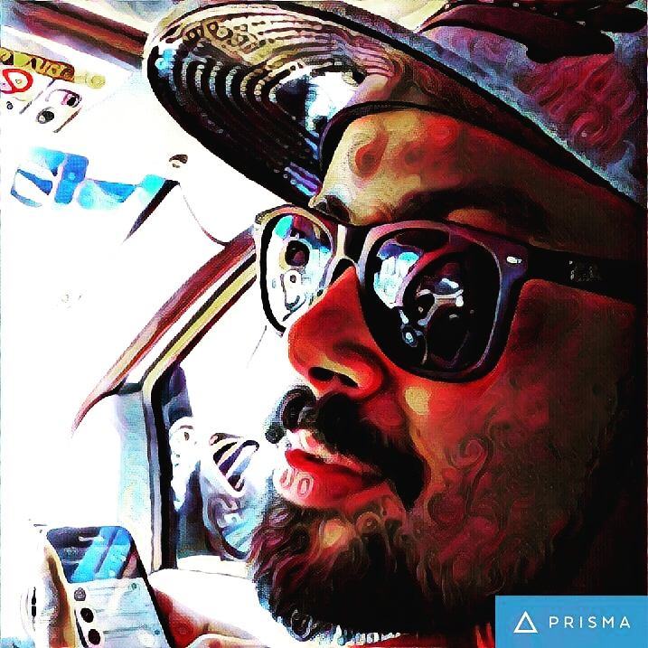

Entrei na Trybe com muito medo por não ter quase nenhum background em tecnologia. Hoje, no meu primeiro projeto avaliatório, ainda continuo com o mesmo medo. Porém, com uma vontade cada vez maior de evoluir minhas capacidades técnicas em desenvolvimento de software e soft skills. Além do ensino de qualidade o que acho fantástico na Trybe é poder conhecer histórias e culturas de pessoas de todo Brasil.

Lições aprendidas:
- Terminal Linux
- Git
- Git Hub
- HTML
- HTML Semântico
- CSS
- Soft Skills
- Git é Lindo
- Git é Todo Dia
- Git é Maravilhosos
Tempo de Trybe
| Semanas | Concluídas |
|---|---|
| Semana 1 | X |
| Semana 2 | X |
| Semana 3 | |
| Semana 4 |
Lições a aprender:
- Soft Skills
- JavaScript
- DOM
- Flex Box
- React
- Node Js
- Métodos Ágeis
- SQL
- Python
- Ciência da Computação